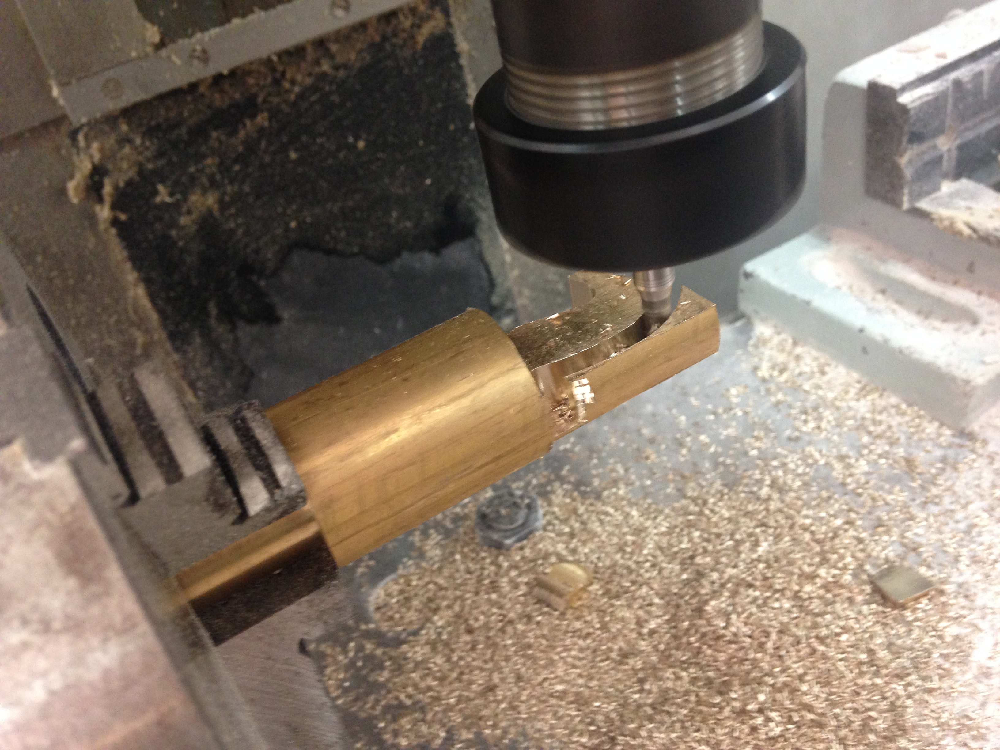

-
Szeretném néhány képben bemutatni azokat a munkákat amit a középiskola 5. évében csináltam ,hisz ez mutatja az eddigi eredményeimet a szakmában. Először is, az általam modellezett-kivitelezett sakk bábúk, melyek immáron sakk készletek legékesebb díszeit képezik.


A bábúkat CNC marógéppel gyártottam, viszont előtte AUTOCAD programban vettem fel geometriai adatait, majd CIMCO programban írtam meg a programot, amin a marógép haladt..
Érdemes amúgy megemlíteni az alapokat, melyek elsajátítása nélkül szinte lehetetlen lett volna, a modernizált, automata vezérlésű gépeken reprodukálni az alkatrészek gyártását. Példának egy cső keresztmetszetre történő menetvágást mutatok meg, amely laikusok számára egyszerűnek tűnhet, viszont ez eg rendkívül nagy precízitást igénylő bonyolult és veszélyes folyamat. Azonban ha kellően betartjuk a gép menetvágás normáit, mindez nem több egy egyszerű, megszokott munkafolyamatnál.
Végezetül szeretném kiemelni, számomra milyen fontos a "return" kifejezés, ugyanis a tudás nemcsak hatalom, de egy olyan érték is amelyet bármikor adunk tovább barátainknak, ismerőseinknek ez mindig kifizetődő, no meg persze nem kerül semmibe... Mégis azt kell hogy mondjam, ez az egyik legértékesebb dolog amit megoszthatunk másokkal, így az elérhetőségeim megtalálnak mindazok amelyek segítségre szorulnak a középiskolai gépész tárgyban, és a gyártástudományban.
Köszönöm honlapom megtekintését!Tel.: 06302880974
Email: raubtier0123@hotmail.com